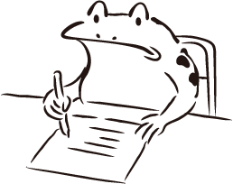

- 名前 :
- 浮田 琉世
- 年齢 :
- 21歳
- 所在地 :
- 岡山市内
- 学校 :
- 専門学校 岡山情報ビジネス学院 情報スペシャリスト学科 (2022年3月卒業見込み)
- スキルセット :
- HTML CSS JavaScript PHP Java
- 資格 :
- 普通自動車第一種運転免許
情報処理技術者能力認定試験 1級
C言語プログラミング能力認定試験 2級
Javaプログラミング能力認定試験 2級
- 自己PR :
-
授業での「自由ゲーム制作」に力を入れました。
私達のチームでは、HTMLやJavaScriptなどの言語を使用したアニメーション付きのスロットゲームを3人で作成しました。
目標は、「他のチームよりも完成度の高いものを作ること」でした。意識したことは、「いつ・誰が・何の作業をしているのか」を明確にし、
「授業の終わり10分前には進捗状況」を確認することです。当初は、慣れないオンラインでの作業が多く、なかなか作業が進まず苦戦しました。
しかし、常に連携しながら進捗を確認していたため、作業をスムーズに進めることができました。
1人で調べてもわからなかった場合は、全員で考え協力しました。その結果、予定よりも早く完成させることができました。
そして、発表後には先生や他チームから称賛の声を頂くことができ、
目標であった「他のチームよりも完成度の高いものを作ること」を達成することができました。
